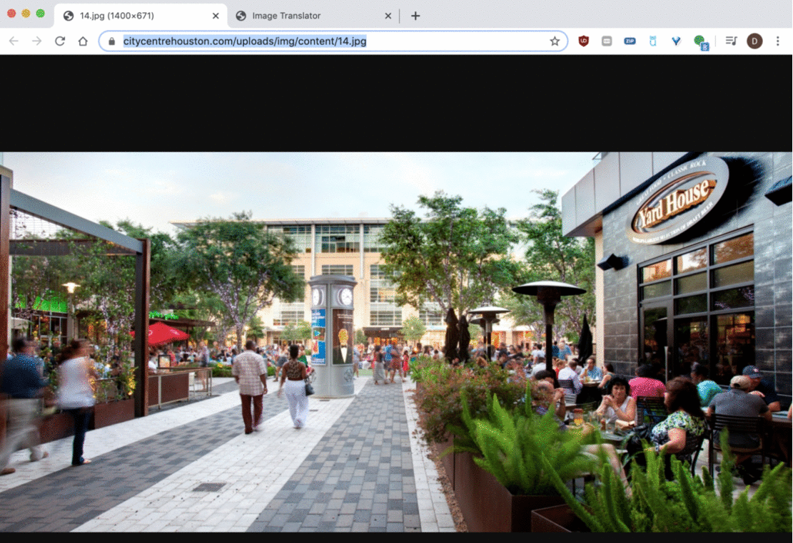
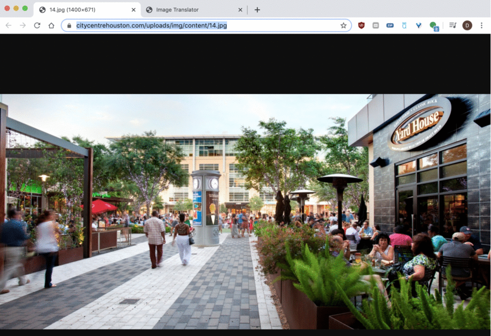

Daniel Mesa
Portland, Oregon
I'm currently attending Oregon State University as a full time, Postbaccalaureate student, and expect to graduate December 2020. As someone relatively new to computer science, I’m constantly learning new ideas and approaches to solve problems every day. I’m excited about the opportunities that challenge my abilities and allow me to grow.
Having completed my first two semesters in C++, I feel comfortable with the program language and yet still learn new things every day. With this fall semester just beginning, I’m diving into Node.JS, HTML, and CSS in Intro to Web Development. I’m currently working on a side project involving APIs that will allow users to submit a URL of a photo, generate words that describe the objects in the photo, and translate those words to Spanish. I am also learning C in Data Structures and, although similar to C++, it's interesting learning the differences.
Prior to the OSU program, I took intro level Computer Science courses taught in Python, which is what led me to apply to the program. I’m eager to start an internship so I can continue to expand upon my skills and learn from talented mentors.
I’m originally from Miami, Florida, and am first-generation Cuban-American. I now live in Portland, Oregon, with my partner, Shloimy, and our Mini Poodle, Turtle.
When not learning, we enjoy the outdoors, reading, and taking Turtle on long walks. Prior to my transition to computer science, I worked as a dentist. Although I loved many aspects of the field of dentistry, in many ways I felt a change was needed. I’m thrilled to be taking the leap towards working in a field that much better suits my personality and outlook. I believe my background has given me a unique and fresh perspective on the future of computer science and where it can take us in the future.
Current Courses: Introduction to Databasese, Data Structures, Introduction to Web Development.
 
